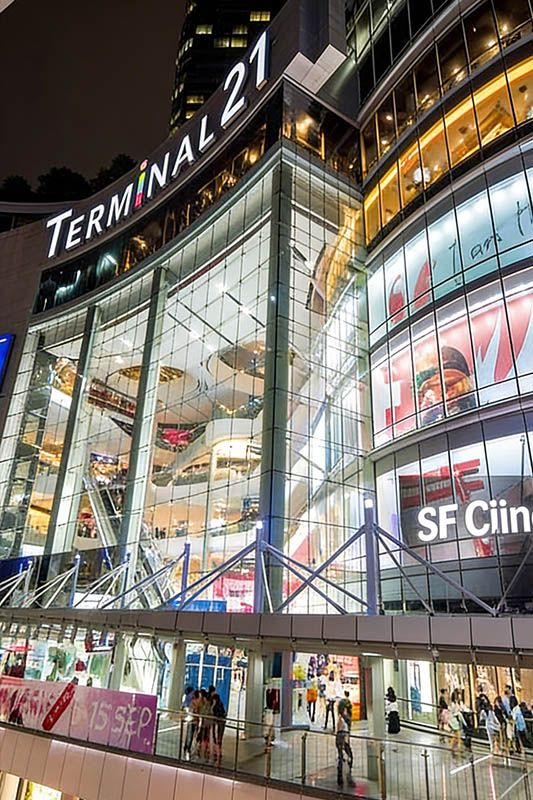
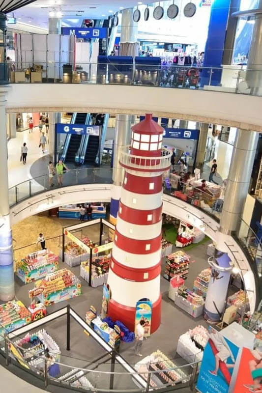

Terminal 21 is Bangkok's most distinctive shopping mall, featuring a unique airport terminal concept where each floor represents a different world city. Located just 1 kilometer from Royal Ivory Hotel and directly connected to BTS Asok station, this innovative mall has become one of Bangkok's most Instagram-worthy destinations since opening in 2011.
What makes Terminal 21 extraordinary is its immersive themed design and affordable shopping experience. Each floor transports visitors to cities like Tokyo, London, Paris, Istanbul, and San Francisco through detailed decorative elements, signage, and atmospheric design. The mall combines this unique concept with practical shopping, offering 600+ stores at budget-friendly prices.
For Royal Ivory Hotel guests, Terminal 21 offers the perfect combination of convenience, entertainment, and value. Whether you need quick shopping, diverse dining options, or simply want to experience Bangkok's most creative mall concept, Terminal 21 provides an easily accessible destination that's both functional and fun.
Terminal 21 is remarkably convenient for Royal Ivory Hotel guests, being one of Bangkok's most accessible major shopping destinations. The short distance and excellent transportation options make it perfect for quick shopping trips or extended mall experiences.
Distance: 1 kilometer | Walking Time: 12 minutes | Cost: FREE
Total Cost: 45 Baht one-way | Journey Time: 8 minutes total | Frequency: Every 3-6 minutes
🛍️ Royal Ivory Shopping Tip: Walking to Terminal 21 is pleasant exercise and lets you see Bangkok street life. Taking BTS is faster and deposits you directly inside the mall. Use our complimentary tuk-tuk to BTS Nana if you prefer to avoid the initial walk to the station.
Terminal 21's unique appeal lies in its detailed city-themed floors. Each level recreates the atmosphere of famous world destinations through decorative elements, signage, and architectural details that provide an immersive shopping experience.
| Floor | City Theme | Shopping Focus | Design Highlights |
|---|---|---|---|
| 🏢 Ground Floor | Airport Terminal | Cosmetics, accessories, cafes | Check-in counters, departure boards |
| 🗾 1st Floor | Tokyo, Japan | Electronics, gadgets, Japanese goods | Neon signs, Japanese street elements |
| 🇬🇧 2nd Floor | London, England | Fashion, books, British-style shops | Red phone booths, Big Ben replica |
| 🇹🇷 3rd Floor | Istanbul, Turkey | Textiles, home decor, crafts | Turkish architectural elements |
| 🌉 4th Floor | San Francisco, USA | Casual wear, American brands | Golden Gate Bridge model |
| 🍽️ 5th Floor | Pier 21 Food Court | International dining, food court | Airport gate seating, global cuisines |
| 🇫🇷 6th Floor | Paris, France | Fashion, luxury goods, French style | Eiffel Tower replica, Parisian cafe |
| 🏖️ 7th-8th Floor | Caribbean Beach/Rome | Restaurants, entertainment, cinema | Beach themes, Roman architectural elements |

Terminal 21 combines themed entertainment with practical shopping, offering excellent value for money across fashion, electronics, cosmetics, and dining. The mall caters to budget-conscious shoppers while maintaining quality and variety.
The famous Pier 21 Food Court features over 50 food stalls offering international and Thai cuisine in an airport gate setting. The unique design includes boarding gate seating areas and departure board menus, creating an immersive dining experience.
International options: Thai, Japanese, Chinese, Italian, American, and Middle Eastern
Budget-friendly: Most meals 100-300 Baht with generous portions
Airport theme: Seating areas designed like airport departure gates
Quality variety: From street food styles to restaurant-quality dishes
Terminal 21 operates with tourist-friendly policies and services that make shopping convenient for international visitors. Understanding the mall's layout, payment systems, and services helps maximize your shopping experience.
💰 Shopping Budget Examples:
Casual shopping: 1,000-3,000 Baht for clothes and accessories
Food court meal: 100-300 Baht for full meal and drink
Restaurant dining: 300-800 Baht for full restaurant experience
Electronics/gadgets: 500-5,000 Baht depending on items
Souvenir shopping: 200-1,000 Baht for gifts and mementos
Terminal 21 has become one of Bangkok's most photographed malls due to its detailed themed decorations and unique design elements. Each floor offers distinctive photo opportunities that showcase the creative city themes.
📸 Photography Guidelines:
Best timing: Weekday mornings for fewer crowds in photos
Lighting: Mall lighting is optimized for photography
Etiquette: Be mindful of shoppers and store operations
Social media: Use #Terminal21Bangkok hashtag
Video content: Walking tours showcasing themed transitions between floors
From Royal Ivory Hotel: Walk 12 minutes along Sukhumvit Road toward Asok, or take BTS Sukhumvit Line 1 stop from Nana to Asok station (3 minutes). Terminal 21 is directly connected to BTS Asok station. Distance: 1km from hotel.
Terminal 21 is open daily from 10:00 AM to 10:00 PM. Individual shops may have slightly different hours. The food court and restaurants typically operate during mall hours, with some staying open later.
Terminal 21 is famous for its airport theme with each floor representing different world cities: Tokyo, London, Istanbul, San Francisco, Paris, Caribbean Beach, and Rome. The unique themed decorations, Instagram-worthy design, and diverse shopping/dining options make it Bangkok's most distinctive mall.
Terminal 21 features 600+ shops selling fashion, electronics, cosmetics, souvenirs, books, and accessories at budget-friendly prices. The mall is known for affordable shopping, diverse international and Thai food options, and unique themed merchandise.
Yes, Terminal 21 is excellent for budget-conscious shoppers. The mall features affordable prices across all categories, the famous Pier 21 Food Court with meals from 100-300 Baht, and good value for money compared to luxury malls. Perfect for travelers seeking quality without premium prices.
Terminal 21's central location and BTS connectivity make it easy to combine with other Bangkok attractions. Plan your day to include cultural sites, additional shopping, or dining experiences in the same area.
Soi Cowboy: 5-minute walk for evening entertainment
Benjakitti Park: 10-minute walk for relaxation and exercise
Exchange Tower: Business district with rooftop bars and restaurants
Sukhumvit restaurants: Numerous dining options along the street